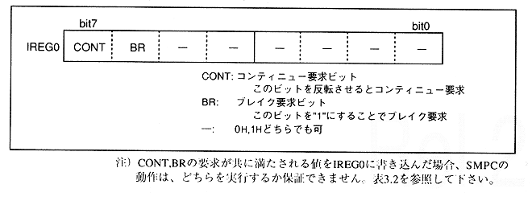

IREG0 is used for continue request and break request to SMPC.
* SMPC starts collecting the remaining peripheral data when there is a request to continue. When there is a break request, the peripheral data collection is terminated and the INTBACK command is terminated.
Figure 3.7 IREG0 (Continue Request, Break Request)

Note) If a value that satisfies both the requirements of CONT and BR is written to IREG0, the operation of SMPC cannot be guaranteed. Refer to Table 3.2.